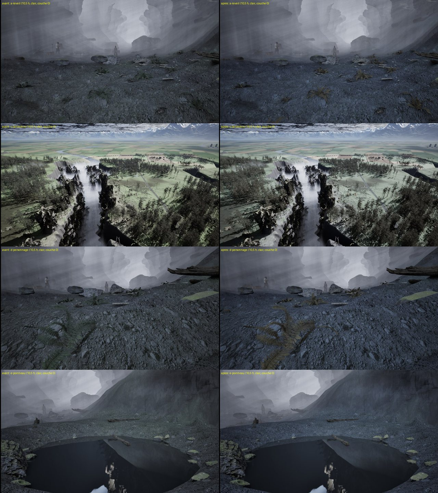
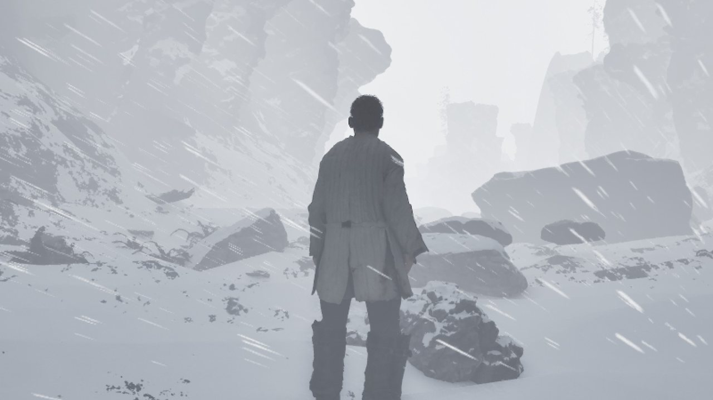

Projet AAA · suivi · samedi 10 octobre 2026 · semaine du 6 au 12 octobre
Jour 5
Cinquième journée de la semaine, ouverte à 5 h. Au programme : la saison et la météo dans le jeu, la nouvelle perdrix en ligne, et les pages « Maquettes » et « Plan » à jour.
Mise à jour : 10/10/2026 à 12:00
Résumé
1 à faire1 en cours4 validés
Quota : 44 % de la semaine utilisés au début de la journée (estimation du compteur) ; budget cumulé du jour : 61 %, soit environ 17 % disponibles.
Repris du Jour 4 : la saison et la météo (T-0168) tournent ; la nouvelle perdrix en ligne (T-0171) et le report de D-261 (T-0172) sont en vérification.
D-265 : travail du Jour 4 enregistré ; questionnaires avec images ce matin (morts-vivants variés, chauve-souris et cheval) ; l'arc des archers est le chantier du reste de la journée.
D-266 (questionnaires avec images) : les quatre morts-vivants variés et le sergent sont gardés, armes au dos pour le prototype, une lueur violette très faible dans leurs orbites ; la nuée de chauves-souris bat 8 fois par seconde ; le museau de la chauve-souris et le cheval qui broute seront corrigés plus tard ; la ruade est gardée.
D-267 : chances de la météo gardées (clair 30 %, couvert 20 %, pluie 25 %, premières neiges 15 %, tempête 5 %), la neige du matin fond avant le belvédère, la meute de 6 viendra après l'arc, et le grand sort se lance avec G ou L3 + R3.
Les files de travail
Chaque ticket a un exécutant et un vérificateur ; une correction est confiée à un agent neuf (D-231). Un seul agent à la fois dans Unreal.
Unreal
Le prototype jouable ; un seul agent à la fois dans le projet.
Fin de la Moisson (48 min de jour, 24 de nuit), feuilles rousses ; météo tirée au hasard parmi six temps, dont la Tempête de Neige ; neige qui tombe et fond ; gibier caché pendant la tempête.
Validé
Repris du Jour 4. Livré (commit d7faf12) : décor de fin d'automne, six météos tirées au hasard avec passages doux, neige qui tombe et fond, tempête qui cache le gibier ; brume de D-232 (1) enfin appliquée ; images par seconde quasi inchangées (pire baisse 2,4 %). Meute de 6 proposée. Vérification lancée à 06:37. Renvoyé en correction : fougères restées vertes, sols réchauffés au lieu de refroidis, flocons et vent peu visibles, valeurs encore dans le code. Correction lancée à 08:28, avec les valeurs choisies par le directeur (D-267). Correction livrée (commit 8ec21ca) : fougères rousses, sauge refroidie, flocons et vent bien visibles (pire baisse d'images par seconde 2,2 %), valeurs sorties du code. Nouvelle vérification lancée à 09:27. Validé après correction (essais refaits par le vérificateur).
T-0169 · D-258 (3)
Cimier doré, pied tourné, scripts d'essai
Le cimier du chef de patrouille lisible comme de l'or ; les pieds des créatures dans l'axe à l'attente ; les scripts d'essai qui rendent le verrou de la carte graphique pendant leurs attentes.
En cours
Lancé à 10:02 ; avec la lueur des yeux des morts-vivants (D-266 (3)) et la touche du grand sort G / L3 + R3 (D-267 (4)). Arrêté proprement à 12:00 à la demande du directeur, qui reprend la carte graphique : cimier, pieds, lueur des yeux et grand sort sont faits mais pas encore validés ; restent une compilation, des captures, le parcours et le commit.
T-0174 · D-248 (2) · D-265 (3)
L'arc des archers, animé par le code
Les archers de la patrouille tiennent l'arc, prennent une flèche, bandent l'arc jusqu'à la joue et décochent ; la corde suit la main.
À faire
Après T-0169.
Quand la carte graphique sera libre : finir T-0169, puis l'arc des archers (T-0174).
Documents et modèles 3D
Les documents de design, les bêtes et le site, hors du projet Unreal.
T-0171 · D-262 · D-263
La nouvelle perdrix en ligne, textes du site à jour
La perdrix aux nouvelles ailes dans « Modèles 3D » ; les questions déjà tranchées retirées des fiches (meneur, morts-vivants variés, « Codex »…).
Validé
Repris du Jour 4 (en vérification). Renvoyé une fois en correction (la page « Jour 1 » présentait encore la question du sanglier, tranchée par D-251) ; corrigé avec la fiche du meneur (D-264 (1)), nouvelle vérification lancée à 05:18. Validé à 05:28.
T-0172 · D-258 (1) · D-261
D-261 et le coût de l'écran « Commandes » dans les documents
La horde qui règle son pas sur le meneur ; le coût mesuré de l'écran (environ 0,7 %) dans le plan de production.
Validé
Repris du Jour 4 (en vérification). Validé à 05:03 : D-261 et le coût de l'écran « Commandes » sont dans les documents.
T-0173 · D-258 (1) · D-264
Pages « Maquettes » et « Plan » à jour, licence MetaHuman
Les deux pages du site refaites depuis les documents à jour (touches réglables) ; la licence MetaHuman vérifiée, sources citées.
Validé
Lancé à 05:28 ; avec les fiches des morts-vivants variés, de la chauve-souris et du cheval (D-266) et les cartes des jours 1 à 3. Livré (commit 7584097) : pages « Maquettes » et « Plan » à jour ; licence MetaHuman vérifiée (jeu et images publiques : oui ; fichiers : non ; deux points encore douteux) ; fiches de D-266 et cartes des jours 1 à 3 à jour. Vérification lancée à 06:41. Renvoyé en correction à 06:56 : suites mal placées dans quatre cartes des jours 1 à 3, et une carte de maquette qui fait encore lancer le sort par l'entité ; ajout d'une ligne sur le doute de licence « UE-Only ». Correction publiée (commit bc86b02), nouvelle vérification lancée à 07:16. Validé après correction.
Après T-0171 et T-0172 : les pages « Maquettes » et « Plan » et la licence MetaHuman (T-0173).
Modèles 3D du jour
Ce qui a été livré ou validé aujourd'hui.
La fin de la Moisson
Validé
T-0168 · D-233 (5) · D-237 (2), (12)

Avant (à gauche) et après (à droite) : fougères rousses, sols plus froids, même heure et même temps clair.
Le prototype se place vers le 20e jour de l'automne, 48 min de jour pour 24 de nuit. Six météos tirées au hasard (clair, couvert, pluie, brume, premières neiges, Tempête de Neige), avec des passages doux.
Sur le PC : E:/aaa-proto/unreal-v2/mesures/t0168/
La Tempête de Neige
Validé
T-0168 · D-236 (4) · D-267

Flocons poussés par le vent ; pendant la tempête, le petit gibier se cache, puis revient une demi-heure après.
La neige tombe, blanchit le sol, les rochers et les toits, puis fond. Images par seconde presque inchangées (au pire 2,2 % de moins).
Sur le PC : E:/aaa-proto/unreal-v2/mesures/t0168/correction-1/
Journal
Début du Jour 5 (le directeur). T-0168 en cours ; T-0171 et T-0172 en vérification.
T-0172 validé. Commit du travail du Jour 4 (4c9145bd).
D-265. Préparation des questionnaires avec images lancée.
Correction de T-0171 publiée (réponses ajoutées aux pages Jour 1 et Jour 3, fiche du meneur), vérification lancée.
Questionnaires avec images tranchés (D-266) ; la lueur des yeux passe dans T-0169, les fiches du site dans T-0173.
T-0171 validé (nouvelle perdrix en ligne, réponses dans les pages des jours 1 à 3). Lancement de T-0173.
T-0168 (saison et météo) livré, vérification lancée.
T-0173 livré, vérification lancée.
T-0173 renvoyé en correction (2 points et un ajout), agent neuf lancé.
Correction de T-0173 publiée, vérification lancée.
T-0173 validé. T-0168 renvoyé en correction ; D-267 (valeurs de la météo, touche du grand sort) ; correction lancée.
Correction de T-0168 livrée, vérification lancée.
T-0168 validé (saison et météo). Lancement de T-0169 ; T-0174 (arc des archers) écrit.
Le directeur reprend la carte graphique : T-0169 arrêté proprement (rien de forcé, rien de commité), l'arc attend.
Questions pour le directeur
Questions en attente du directeur.
1 question attend sa réponse. Personne ne les tranche à la place du directeur.
Échanges
Installer giscus sur le dépôt du site (un clic) pour ouvrir le fil Échanges ; puis les surnoms de l'entité (à choisir à deux).
Sur le PC
E:/aaa-proto/unreal-v2 : le prototype Unreal (saison et météo) · E:/aaa-proto/pages-github/site : le clone du site · D:/aaa-game/.equipe/taches (les tickets)